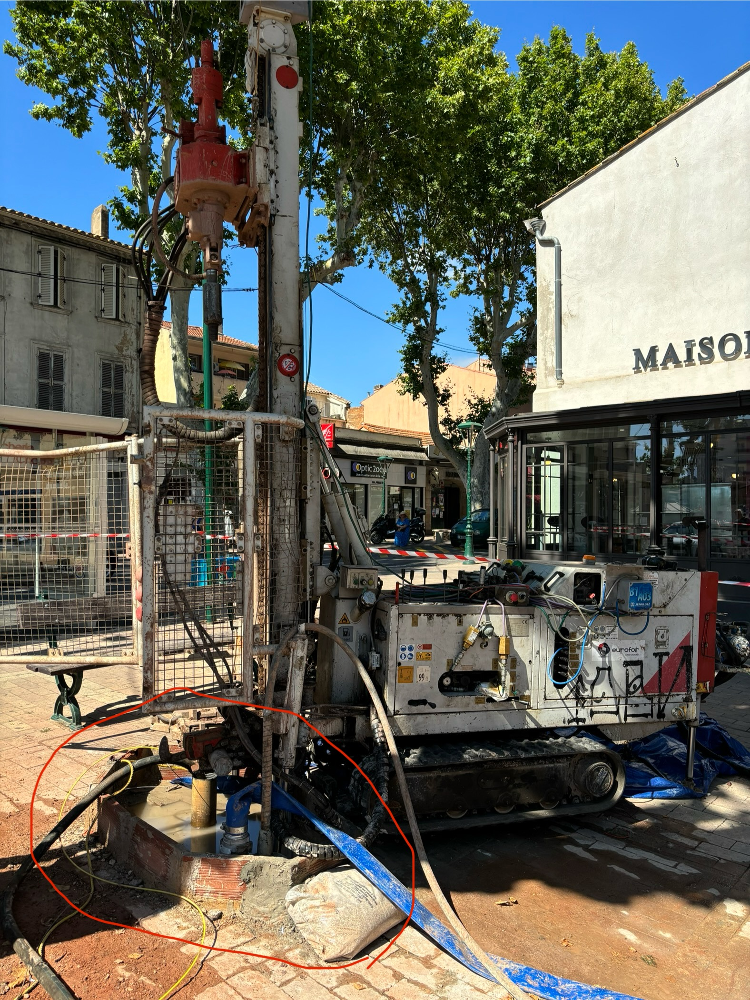

Études de fondations, reconnaissances de terrain complexes et expertises géotechniques de haute précision pour sécuriser vos structures.
Géoterria déploie un savoir-faire complet pour analyser, modéliser et dimensionner l'interaction entre vos ouvrages et leur environnement géologique.
Grâce à un parc matériel polyvalent et innovant, nous accédons aux sites les plus complexes. Qu'il s'agisse de levages par grutage en espaces confinés ou d'héliportages en zone montagneuse, nos équipes surmontent toutes les contraintes d'accès.

Nos propres ateliers mobiles de forage nous permettent d'acquérir de manière agile et hautement réactive toutes les données géologiques indispensables à la réussite de vos projets immobiliers et d'infrastructures.

Reconnaissance sur digues, quais et milieux aquatiques. Notre expertise s'étend au comportement des sols en interface avec l'eau pour pérenniser vos infrastructures portuaires et de soutènement.